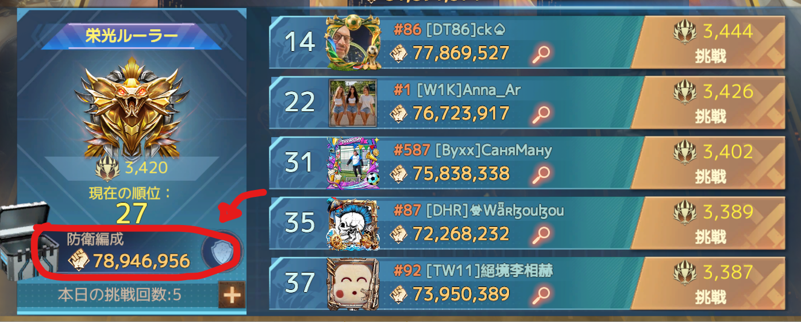

5月末のアップデート以降、致命的にマッチングのシステムが変わってしまいました。
最近、やたら強い敵とマッチングしたり、マップ全体が戦闘同盟ばかりになったりすることが増えましたがまさにこれが原因であり、今一度 周知も兼ねて投稿させていただきます。
大きな変更点として、従来の方式が廃止され、キル数によって個々の評価値が変動する仕様に変更されました。
この変更以前は、マッチングの仕組みをあまり理解しないまま、メンバー全員をエントリーさせてエリート帯に参加していた同盟が多く存在していました。
しかし、アップデート後はキル数が重視されるようになったため、いわゆる「農民同盟」がエリートウォーゾーンに参加することは事実上不可能になりました。
エリート帯は戦闘に特化した同盟同士で集中しやすくなり、結果として以前よりも厳しいマッチングが増えていると感じます。 実際のところ、yekuではアップデート以降、非常に厳しいマッチングが続いており戦績は1勝5敗となっています。
キル数はあまり意識しなくていいと思っています。「エイペックス」「エリート」「フィアレス」の振り分けにはキル数の影響がはっきり出ていますが、振り分けられた後は装備や兵士数などの評価値をもとにマッチングしている気がします。
——などなど、あらゆる面で「最高戦力」を更新しないことが重要です。私たちが本当に見直すべきは、こうした評価値の調整だと思います。
自分の戦力って過剰なの？！ って思った方は、アリーナ評価値を参考にしてみてください。

栄光のアリーナに行き、この赤い部分の数値がアリーナ評価値です。
目安としてアリーナ評価値の3倍～3.3倍程度が適正戦力です。
私であれば7894万なので、戦力は2.3億～2.5億程度が理想的な体重です。
「アリーナが5000万なのに戦力が2億ある」という方はおそらく兵士が多すぎるか、無駄に戦力を底上げしている可能性が高いので、ダイエットしましょう
理由は、モードによってマッチングの傾向が明らかに違うからです。ポンペイでは、兵装を外した方が良いマッチングになることが多いです。反対に、諸島レイドや極限対決では、兵装を外すかどうかに関係なく理不尽に相手が強い傾向があります。アイランドは、きついマッチと無双マッチの両極端で、もはや適当にマッチしている印象です。
とはいえ、同盟として「外す」と決めたのにノータッチのメンバーもちらほら見かけます。意味があるかどうかは別として、やると決めたら全員で協力すべきだと思います。
また、リセット直前に兵装を解除する方もいますが、それはやめてください。
理由は諸島レイドなどでエリートウォーゾーンを狙う場合、500位付近になるようにリーダーが毎回8時頃から調整をしていてくれますが、直前に兵装を外されてしまうと事故って500位以下に落ちてしまい、フィアレスでマッチングしてしまう危険性があるためです。
マッチング作業は大変なので、私は前日の夜には解除をするように心がけてます。
ここからはだんだんオカルトっぽくなってきますが、ありえそうなのでアンケート取ってみますｗ
これが本当だとしたら、下に降り放題なので無いと思いたいですが今まで試したことがないので「うーむ」でｗ
そんなことはないと信じたいですが、実はあるんじゃないかと思っています（笑）期待も込めて。
戦争はアクティブ人数が50人からエントリーが可能ですが、サブアカウントなどを詰め込み平均を下げることでマッチングがゆるくなるというもの。
私は無い寄りですが、長いことマッチングの調整をやってきたリーダーの肌感覚である気がするということなので、ありそうな気もする